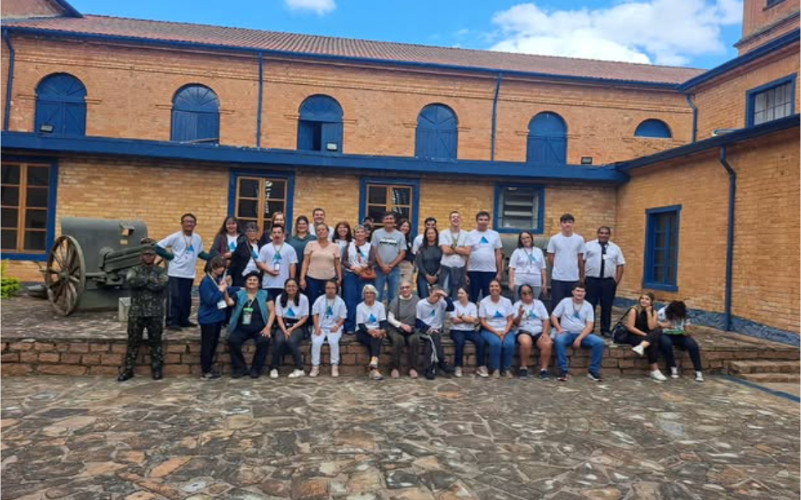

HOME
Mais que uma Associação, um Legado de Amor e Inclusão
Tudo começou com um grupo de mães movidas por um sonho em comum: construir um mundo onde seus filhos, jovens com múltiplas deficiências, não apenas coubessem, mas brilhassem. Da força desse amor que desafia limites, nasceu a Associação Viva Luz (AVL), uma entidade sem fins lucrativos que transforma vidas. Nosso propósito é claro e profundo: iluminar o caminho para a inclusão social de pessoas com deficiência a partir dos 14 anos. Acreditamos que cada ser humano guarda dentro de si um potencial único. Nossa missão é oferecer as ferramentas para que todos descubram seu valor, suas habilidades e vozes próprias. Por meio de oficinas de artesanato, música, dança e outras expressões, não ensinamos apenas técnicas; cultivamos a autoconfiança, a independência e a alegria de viver. Caminhamos lado a lado com cada indivíduo e sua família, assegurando que sigam seu ciclo de vida com a segurança e o apoio necessários para serem, simplesmente, felizes.